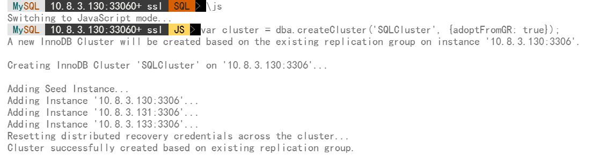

本文最后更新于 2026年4月12日 下午
Mysql8.0启用组复制（集群）的配置过程和踩过的坑，基于Mysql8.0.45和docker容器化配置模式，参考节点为三节点冗余服务器，mysql-route负责统一管理数据库入口
全过程有两种：
第一种：数据库初始化完成后，配置参数，随后自行搭建组集群，然后将创建好的集群使用mysqlshell处理元数据后实现集群的激活和入口统一。
第二种：数据库初始化完成后，配置参数，使用mysqlshell进行集群搭建。
初始化注意事项
新的数据库要开启集群，需要先初始化默认的mysql数据库，然后在my.cnf文件中添加集群相关的配置参数，参考配置文件如下
新数据库初始化需要删除集群配置里的内容，等初始化结束后再写入my.cnf，否则数据库会初始化失败！
初始化内容里的mysql的配置，无论你选择哪种配置方式处理过程都一样
my.cnf文件
1
2
3
4
5
6
7
8
9
10
11
12
13
14
15
16
17
18
19
20
21
22
23
24
25
26
27
28
29
30
31
32
33
34
35
36
37
38
39
40
41
42
43
44
45
46
47
48
49
50
51
52
53
54
55
56
57
58
59
60
61
62
63
64
65
66
67
68
69
70
71
72
73
74
| [client]
default-character-set=utf8mb4
[mysql]
default-character-set=utf8mb4
[mysqld]
# 基础字符集配置
init_connect="SET collation_connection = utf8mb4_unicode_ci"
init_connect="SET NAMES utf8mb4"
character-set-server=utf8mb4
collation-server=utf8mb4_unicode_ci
lower_case_table_names=1
# 通用日志（按需保留）
general_log=ON
general_log_file=/var/log/mysql/mysql_general.log
# binlog
log_bin=/var/log/mysql/mysql-binlog
# 日志完整性校验
binlog_checksum=CRC32
# 轮转大小500M
max_binlog_size=524288000
# 保留天数30，单位秒
binlog_expire_logs_seconds=2592000
bind-address=0.0.0.0
# ---------------------------
# 以下为 Group Replication 集群必备配置
# ---------------------------
# 启动时自动加入组（设置为 OFF，手动控制，待集群稳定后再改回ON，或手动启动后执行START GROUP_REPLICATION;）
plugin-load-add=group_replication.so
group_replication_start_on_boot=OFF
# Group Replication 通信地址（用于节点间内部通信）
# 格式：宿主机IP:组内通信端口（映射到容器的该端口）
group_replication_local_address="10.8.3.130:13306"
group_replication_group_seeds="10.8.3.130:13306,10.8.3.131:13306,10.8.1.10:13306"
# 节点在集群中的标识（用于 MySQL 客户端连接）
# 因为容器使用桥接网络，需设置 report_host 为宿主机 IP
report_host=10.8.3.130
report_port=3306
# 服务器 ID，集群内唯一
server_id=1
# 启动时自动引导组（仅用于初始化第一个节点，保持OFF即可）
group_replication_bootstrap_group=OFF
# 组复制模式（单主模式）
group_replication_single_primary_mode=ON
# 组名称（UUID，可任意生成，集群内一致）
group_replication_group_name="1c2ad992-3242-11f1-a2e0-0242ac120002"
# 开启 GTID
gtid_mode=ON
enforce_gtid_consistency=ON
# 复制元数据存储方式
master_info_repository=TABLE
relay_log_info_repository=TABLE
# 是否将主库传入变更写入从库binlog
log_replica_updates=ON
# 写集合提取方式（Group Replication 需要）
transaction_write_set_extraction=XXHASH64
# 禁用多主更新中严格的一致性检查，单主模式必须全体禁用
group_replication_enforce_update_everywhere_checks=OFF
|
环境变量
Mysql还有部分环境变量可供快速初始化，可参考如下
1
2
3
4
5
6
7
8
9
10
11
12
13
14
15
16
17
| # 新建一个指定密码允许从其他服务器远程登录的root账号
MYSQL_ROOT_PASSWORD=
MYSQL_ROOT_HOST=%
# Mysql router也会使用
MYSQL_USER=
MYSQL_PASSWORD=
# -------------------
# mysql-route配置
# -------------------
# 连接主节点的ip和数据端口（3306）
MYSQL_HOST=
MYSQL_PORT=
# 节点数，按实际修改，route会检查，最小为3
MYSQL_INNODB_CLUSTER_MEMBERS=3
# route不创建新成员
MYSQL_CREATE_ROUTER_USER=0
|
docker容器化部署配置
Mysql数据库 compose文件
1
2
3
4
5
6
7
8
9
10
11
12
13
14
15
16
17
18
19
20
| version: '3'
services:
mysql:
image: mysql:8.0.45
container_name: mysql8.0
env_file:
- ../system.env
volumes:
- ./log:/var/log/mysql
- ./data:/var/lib/mysql
- ./conf:/etc/mysql/conf.d
- /etc/localtime:/etc/localtime:ro
- ./run:/var/run/mysqld
network_mode: host
ports:
- 3306:3306
- 13306:13306
restart: always
|
Mysql-router compose文件
1
2
3
4
5
6
7
8
9
10
11
12
13
14
15
16
| version: '3'
services:
mysql-router:
image: mysql-router:8.4
container_name: mysql-router
env_file:
- ../system.env
network_mode: host
ports:
- 6446:6446
- 6447:6447
restart: always
|
Mysql shell
可以访问Mysql官方下载地址：https://dev.mysql.com/downloads/
自行搭建集群下，MysqlShell的操作
1
2
3
4
5
6
7
|
tar -zxvf xxxxxx
`echo 'export PATH="/opt/tools/mysqlshell/mysql-shell/bin:$PATH"' >> ~/.bashrc`
source ~/.bashrc
mysqlsh --version
|
1
2
3
4
5
6
7
8
|
mysqlsh -u {你的用户} -h {节点ip} -p{密码}
\js var cluster = dba.createCluster('SQLCluster', {adoptFromGR: true});
cluster.status();
\exit
|

使用 MysqlShell 初始化集群和搭建
待补充
坑点合集
1.所有数据库的配置须保持一致，如出现不一致的配置会导致集群配置冲突然后全体掉线。
2.不同的硬件架构下的系统，即使使用同一版本的数据库，也无法搭建集群。集群所有节点必须处于同一建构下，如全为arm或全为amd_x86
3.引导集群创建时，只有第一个引导节点需要配置账户权限和修改节点初始化引导开关，其余节点直接配置同步用户后加入节点即可。
4.数据库必须先初始化，然后再加载插件并修改添加相关配置。不能在初始化时就加载插件，插件会因为相关表不存在而报错，然后打断整个数据库的初始化过程。
5.Mysql8.0默认使用的密码插件caching_sha2_password 要求集群连接时使用SSL方式或者要求基于RSA密钥进行密码交换(需要客户端指定 GET_MASTER_PUBLIC_KEY=1)，最简单的办法就是直接修改密码插件为mysql_native_password。
6.mysql集群需要绑定本机IP，容器化部署会导致容器IP和宿主机IP不一致，随后集群绑定IP失败，解决办法为：将mysql的网络设置为host，直接使用宿主机IP。
7.自行配置并创立集群后，必须使用 MysqlShell 来处理集群元数据，否则Mysqlrouter无法通过元数据识别到集群信息。
8.配置文件中新建的用户账号，需要在创立完成后手动赋予数据库全权限和集群权限，否则也会导致数据不同步然后集群坏掉只能重置数据和集群